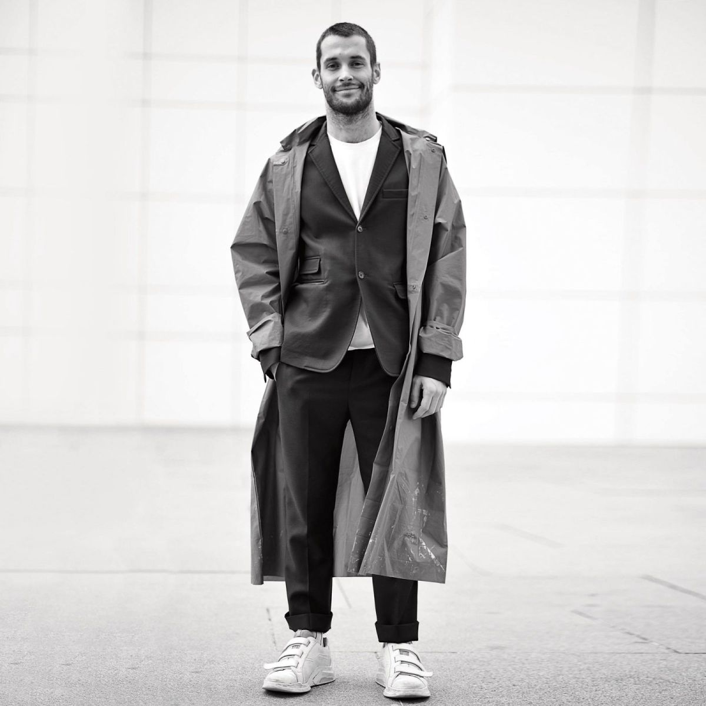
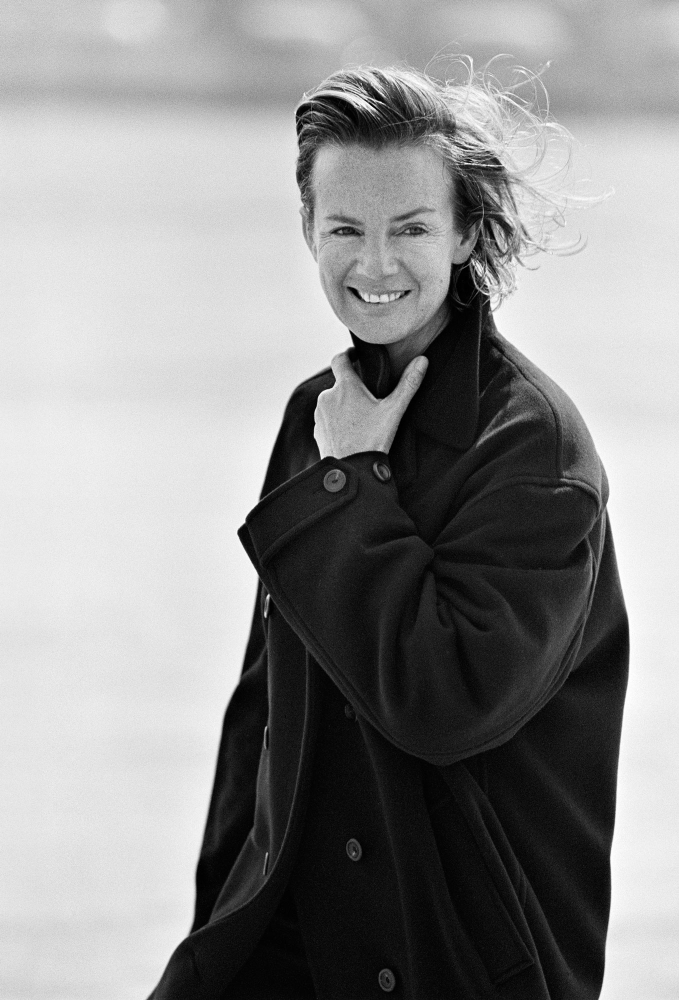

Fashion designing can be loosely defined as 'the art of creating fashionable apparel'.For 21st Century, fashion designing is no longer only the designing and creation of a garment, but it is a world in itself involving fashion, design, creativity, technology as well as business. Fashion designing as a trade is grown with the cultivation from great fashion designers. Fashion designers have gone on to get repute not only in their own countries, but internationally as well. Moreover, The number of fashion shows and participation in the same has gone up considerably in recent times. We will bring three great and creative fashion designers and one of their best shows all over the world for you to enjoy the charming of fashion!

Simon Porte Jacquemus is a French fashion designer
He is the founder of the Jacquemus fashion label.
Not only does Simon Porte Jacquemus’ newest collection serve clean, classy and exquisitely French silhouettes, but it brings the fashion industry into a new age of responsibility, paying homage to the brand’s moral code: 1. Jacquemus strives to create a cast that embraces all body shapes 2. Jacqumus designs featured racial diversity 3. Jacqumus runway support sustainability.
Simone Rocha is an Irish fashion designer,who putting women center stage
She is the daughter of fashion designer John Rocha. She is the founder of Simone Rocha.
It’s been a decade since Simone Rocha launched her eponymous label. With it, she’s firmly established an instantly recognisable aesthetic that combines the traditionally effeminate with a unique, macabre spirit. There’s no denying her commercial success either: the brand boasts an enviable roster of global stockists and flagships in London, New York and Hong Kong. Despite the heights she’s reached, the designer, with her endearing chuckle, is feeling grounded as she reflects on the past 10 years. “I’m incredibly proud and humbled,” she says. “It's made me quite restless, but totally resilient.”

Heidemarie Jiline "Jil" Sander is a minimalist German fashion designer
She is the founder of Jil Sander fashion house
Jil Sander wants to look at the future with positivity and optimism, two elements that will define the mood of their Jil Sander women’s collection. Fashion-wise, the designers translated this desire for optimism into a collection that combines the brand’s signature more rigid silhouettes with a new sense of fluidity. Her design principles – harmony of proportion, sophisticated three-dimensionality, understatement and dynamic elegance – have always remained the same. And yet she has presented the fundamentals of her aesthetics in each of her collections in completely new ways